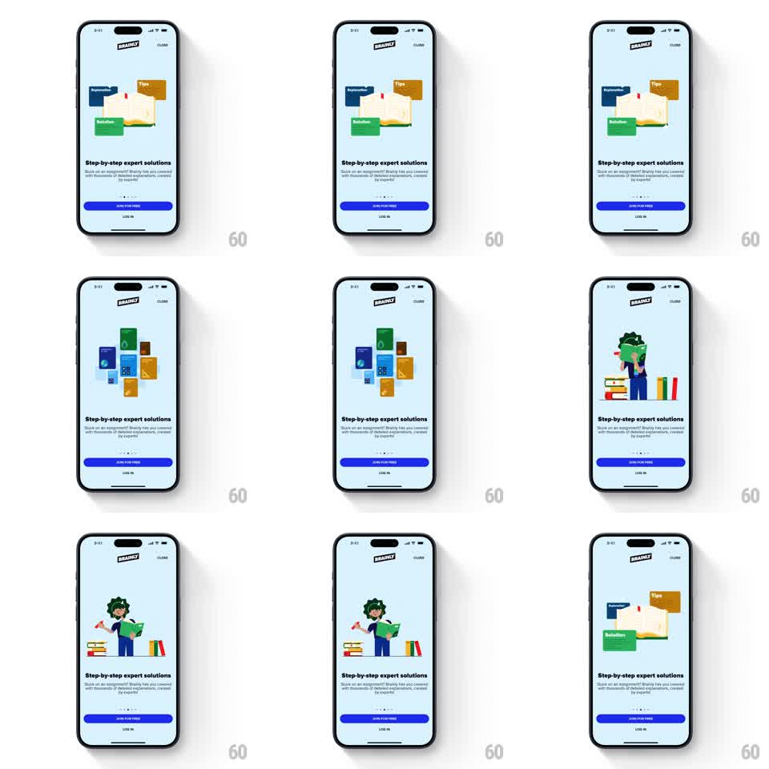

Media
Frame-by-frame

Rebuild this animation 1:1: Brainly's expert-solutions onboarding story - on a light blue screen, an open book with Explanation, Tips, and Solution tabs explodes into a floating grid of subject books, then reassembles into an expert character among book stacks, looping.

Rebuild this animation 1:1: Brainly's expert-solutions onboarding story - on a light blue screen, an open book with Explanation, Tips, and Solution tabs explodes into a floating grid of subject books, then reassembles into an expert character among book stacks, looping. ## Integration Integration: stack-agnostic spec - springs given as stiffness/damping, timed motions as duration + curve; map every value to your framework and animation library of choice. ## Scene Light blue onboarding screen: Brainly logo, CLOSE, headline "Step-by-step expert solutions" with sub-line, page dots, JOIN FOR FREE and LOG IN buttons fixed at the bottom. The upper stage cycles three compositions: (1) an open book with colored tabs labeled Explanation, Tips, Solution; (2) a loose grid of floating colored book covers; (3) a green-haired expert holding a book beside book stacks and a bar chart. ## Motion spec Pattern: looping three-beat illustration morph. - Beat 1: the tabbed book floats gently (translateY +-6px, 2.5s sine) with its tabs bobbing out of phase. - Morph to beat 2: the book's pages and tabs fly apart and re-layout as the floating book grid (each piece travels on its own arc over ~500ms, ease-in-out), then the grid drifts subtly. - Morph to beat 3: the grid books slide and scale into the expert scene - spines become the book stacks, covers shrink away, the expert pops in last (spring stiffness ~350, damping ~18). - The loop holds each beat ~1.5s before morphing; after beat 3 it morphs back to beat 1. - Fixed UI (headline, buttons) never animates. ## Calibration - Pieces should travel as a swarm, not in lockstep - randomize each piece's path timing by +-60ms. - The expert pop is the only true spring; the morphs themselves are smooth tweens. ## Reduced motion Crossfade between the three compositions (250ms each), no traveling pieces. ## Don't miss - The tabs (Explanation, Tips, Solution) are readable labels in beat 1 - they are the product promise, keep them legible. - The loop is seamless: the last morph returns to the exact first composition.